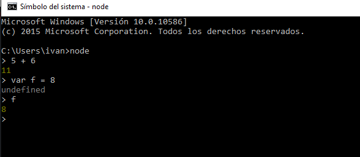

<!DOCTYPE html>
<html>
  <head>
      <meta charset="utf-8" />
      <title>Practica 1</title>
      <link href="css/index.css" rel="stylesheet">
      <link rel="shortcut icon" type="images/favicon.png" href="/favicon.png"/>

  </head>
  <body><center><br><h3><a>Tutorial NodeJS, Express, Atom, GitHub, Cloud9
    y Markdown</a><h1></center>
      <p id= perfil> Iván García Campos. <a href="https://github.com/alu0100693737">My Github</a> <a href="http://alu0100693737.github.io/">Mi página personal</a>
      <br><br><p><a href="#primero">NodeJS</a> <a href="#segundo">Express</a> <a href="#tercero">Atom</a> <a href="#quinto">Github Desktop</a> <a href="#sexto">Cloud9</a> <a href="#septimo">Markdown</a></p> <br>
      <div id=primerparrafo><a name="primero"></a>
      <h2>Instalación de NodeJS en Windows</h2>
      <p>NodeJS es un intérprete <strong>Javascript</strong> para la capa del
        servidor que permite a un programador construir aplicaciones altamente<br>
        escalables y escribir código que maneje decenas de miles de conexiones
        simultáneas en una sólo una máquina física.</p>
      <p>Para empezar a utilizarlo descargar el paquete de instalación para la
        plataforma windows y seguir los pasos del asistente de instalación
        de <strong>NodeJS</strong>.</p>
      <center><p></p><center>
      <p>Abrimos la consola de <strong>NodeJS</strong> y comprobamos que se ha instalado correctamente.</p>
      <br>
      </div><br>
      <div id= segundoparrafo><a name="segundo"></a>
      <h2>Instalación de Express en Windows</h2>
      <p>Instalamos el framework <strong>Express</strong> con la consola de <strong>NodeJS</strong> y el siguiente comando:</p>
      <p><strong>Comando:</strong></p>
      <blockquote>
      <p><center><i<code>npm install express --save</code></i</center></p><br>
      </blockquote>
      <p><center></center></p><br>
     </div>
     <br>
      <div id= tercerparrafo><a name="tercero"></a>
      <h2>Instalación del editor de texto Atom</h2>
      <p>Usaremos <strong>Atom</strong> como editor de texto para el desarrollo de nuestros proyectos, para ello descargamos el instalador en la página oficial de atom, y a continuación ejecutamos el asistente de instalación.</p>
      <p></p>
    </div>
    <div id=cuartoparrafo><a name="cuarto"></a>
      <p>Dado que vamos a utilizar el formato <strong>Markdown</strong> es bueno saber que en <strong>Atom</strong> podremos obtener una preview del contenido de nuestro fichero Markdown ya que incorpora el formato <strong>GitHub Markdown</strong> con el comando:</p>
      <p><strong>Comando:</strong></p>
      <blockquote>
      <ul>
      <li>Markdown preview <code>ctrl+shift+m</code></li>
      <li>Markdown export to HTML <code>Save As HTML</code></li>
      </ul>
      </blockquote>
      <br>
    </div><br>
    <div id= quintoparrafo><a name="quinto"></a>
      <h2>Instalación de GitHub Desktop</h2>
      <p>GitHub es una plataforma para alojar proyectos utilizando el sistema de control de versiones <strong>Git</strong>. Para instalarlo accedemos a la página oficial de <strong>GitHub</strong> y descargamos el instalador que ejecutaremos posteriormente para iniciar el asistente de instalación.</p>
      <p><center></center></p>
      <p>Una vez instalado configuramos nuestra cuenta de <strong>GitHub</strong> en la aplicación para poder sincronizar nuestro repositorio tanto local como remoto, en caso de no tener cuenta crearemos una en la página de <strong>GitHub</strong>.</p>
    </div><br>
    <div id=sextoparrafo><a name="sexto"></a>
      <h2>Cloud 9</h2>
      <p>Es un IDE de desarrollo online, para su uso será necesario crear una cuenta en la página oficial o acceder con las credenciales de GitHub si ya se dispone de una cuenta. Una vez registrados podremos crear proyectos de varias tecnologías como puede ser NodeJS, HTML5, C++, Ruby On Rails, etc.</p>
      <p><center></center></p>
      <p>Si disponemos de algún proyecto en un repositorio de GitHub podremos asociarlo a <strong>Cloud9</strong> para trabajar en él tan solo creando un “<code>nuevo workspace</code>” y añadiendo la url <em>git</em> del correspondiente repositorio.</p>
      <p><center></center></p>
      <p>Además <strong>Cloud9</strong> permite el trabajo en equipo en el IDE añadiendo miembros a tu workspace.</p>
    <br></div><br>
    <div id=septimoparrafo><a name="septimo"></a>
    <h2>Markdown</h2>
      <p>Markdown es un lenguaje de marcado ligero, lo vamos a utilizar en el editor de texto Atom ya que incorpora por defecto este formato y podremos obtener un live preview mientras vamos desarrollando además de poder exportarlo a HTML sin la necesidad de usar un conversor adicional.</p>
      <p>Sintaxis:</p>
      <p>Encabezados</p>
      <pre><span>#&nbsp;Encabezado&nbsp;H1 <br>##&nbsp;Encabezado&nbsp;H2<br><span>###&nbsp;Encabezado&nbsp;H3</pre><p>Tipografía</p>
      <pre><span>*</span></span><span>*Negrita**</span></span><br><span>*</span></span><span>Cursiva*</span><br><span>&gt;&nbsp;Citas</span><br><span>Parrafo&nbsp;separado&nbsp;por&nbsp;lineas&nbsp;en&nbsp;blanco</span><br><span>`Codigo`</span></pre><p>Recursos</p>
      <pre><span></span><br><span>*&nbsp;[Links](</span><span><span>https://example.com</span></span><span>)</span></pre><p>Listas</p>
      <pre><span>1.&nbsp;Lista&nbsp;1</span><br><span>2.&nbsp;</span><span>Lista&nbsp;2</span><span>&nbsp;</span><br><br><span>*</span><span>&nbsp;Lista&nbsp;1</span>
        <br><span>*</span><span>&nbsp;Lista&nbsp;2</span></pre><br>

    </div>
    <p><strong>Recursos:</strong></p>
    <div id=enlaces><center>

      <a id=link href="https://nodejs.org" target="_blank">NodeJS</a>
      <a id=link href="http://expressjs.com"target="_blank">Express</a>
      <a id=link href="https://atom.io"target="_blank">Atom IDE</a>
      <a id=link href="https://desktop.github.com"target="_blank">GitHub Desktop</a>
      <a id=link href="https://pages.github.com/"target="_blank">GitHub Pages</a>
      <a id=link href="https://c9.io"target="_blank">Cloud 9 IDE</a>
      <a id=link href="http://daringfireball.net/projects/markdown/"target="_blank">Markdown</a><center>
    </div>
    <br><br>
</body>
</html>
